Every picture below was produced by the engine itself (tools/make_gallery.py); the scenes are in examples/.
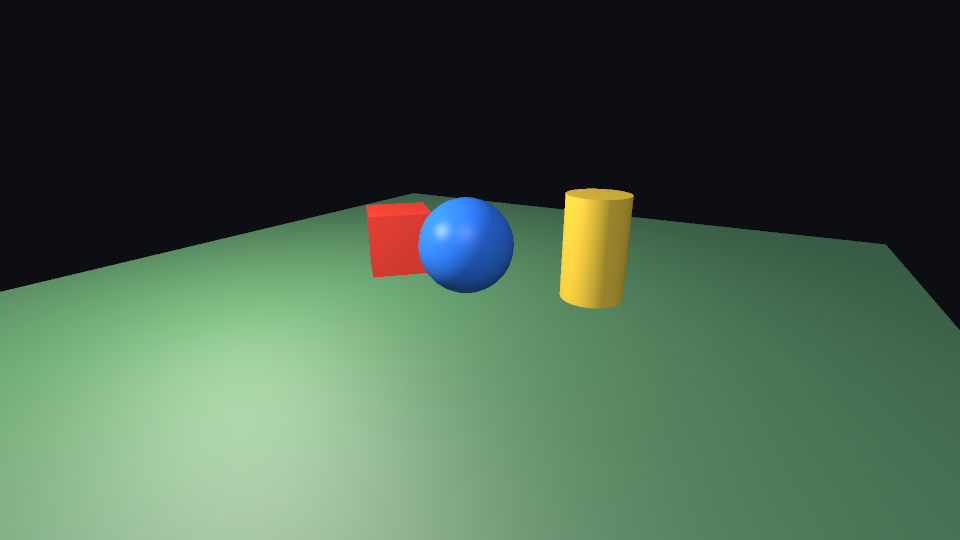
showcase: Lit 3D meshes with a point light and a sun: the reference renderer, bit-identical on every machine. 960x540, reference renderer, picture hash c29d1098365a4b31
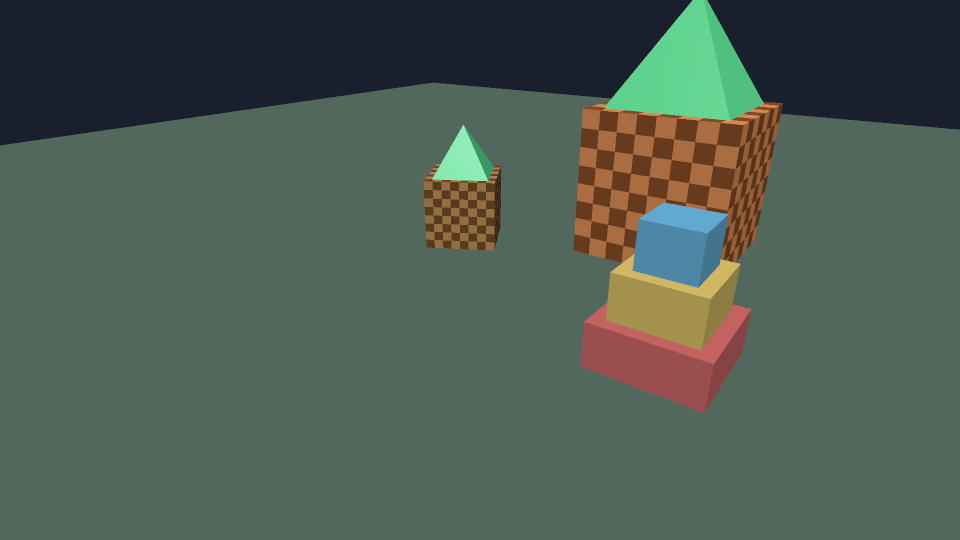
models: Imported glTF models: a textured crate with a plain-material pyramid, and a three-colour tower. 960x540, reference renderer, picture hash d4db59478369f474
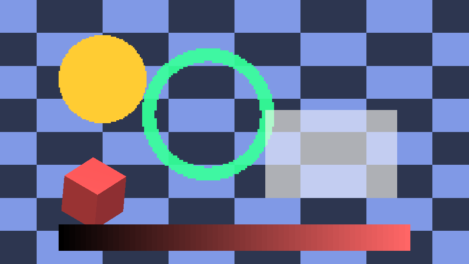
sprites: 2D sprites with textures, blending and a 3D cube among them (orthographic camera). 960x540, reference renderer, picture hash 713f66c46bf5b106
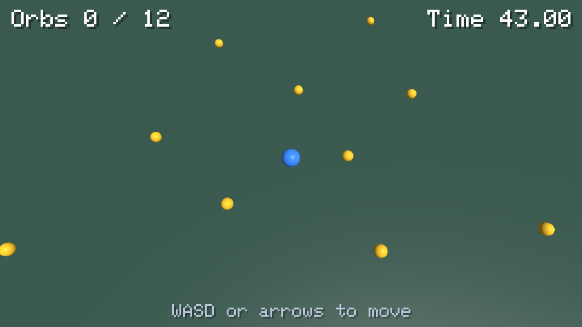
orb_dash: Orb Dash, a 3D game made of data: components, graph systems, HUD text. Roll with WASD. 960x540, reference renderer, picture hash e0294eb4f0be3c68
clockwork: Clockwork: planets, moons and a moon of a moon, all attached entities (Parent + LocalTransform) under spinning pivots; no orbit code at all. Built by tools/build_clockwork.py through tool calls. 960x540, reference renderer, picture hash 8786fb0ca5ce06a7
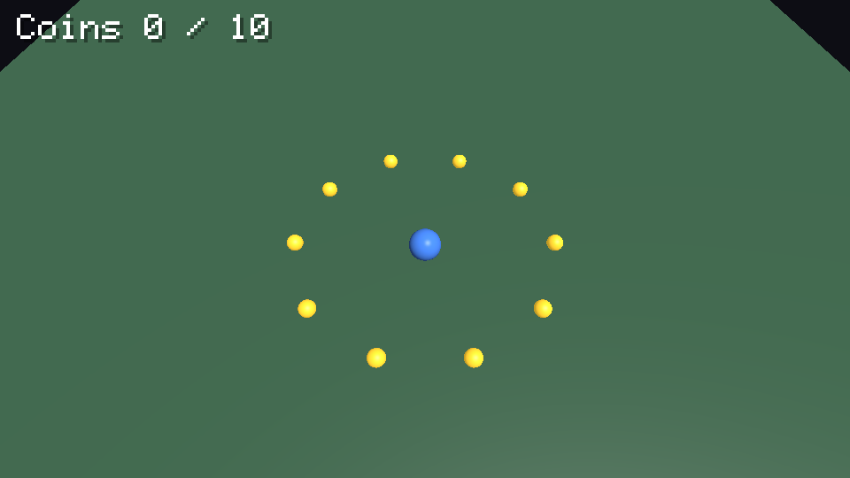
coin_chase: Coin Chase, the tutorial game (docs/TUTORIAL.md): the camera is attached to the ball with Parent + LocalTransform. 960x540, reference renderer, picture hash 5faf1b8aeff12df1
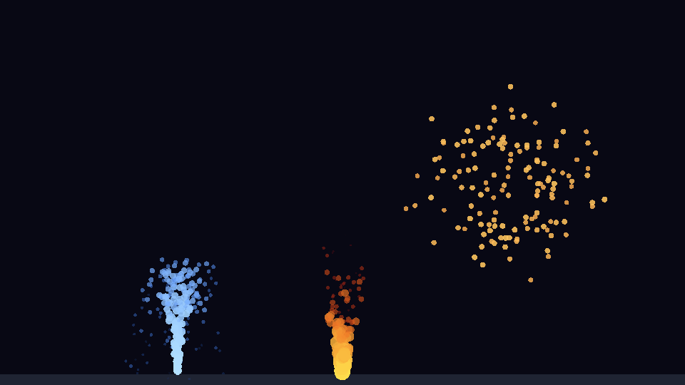
particles: Particles: a fountain, a campfire and fireworks, all `Emitter` entities (docs/AI_GUIDE.md); a small graph system times the bursts. 960x540, reference renderer, picture hash 2b069ad1ad102786
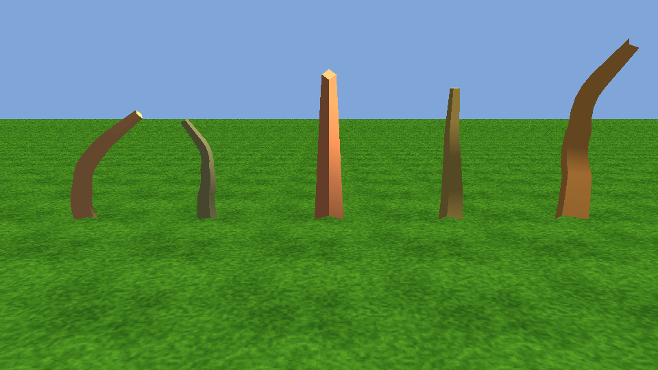
animation: Skeletal animation: one skinned glTF model (`examples/models/swayer.glb`, four joints) playing its two clips at different speeds; an `Animator` component holds the clip name and the clock (`tools/build_animation.py`). The reference renderer draws it too. 960x540, reference renderer, picture hash fc7f2d89ec84a379
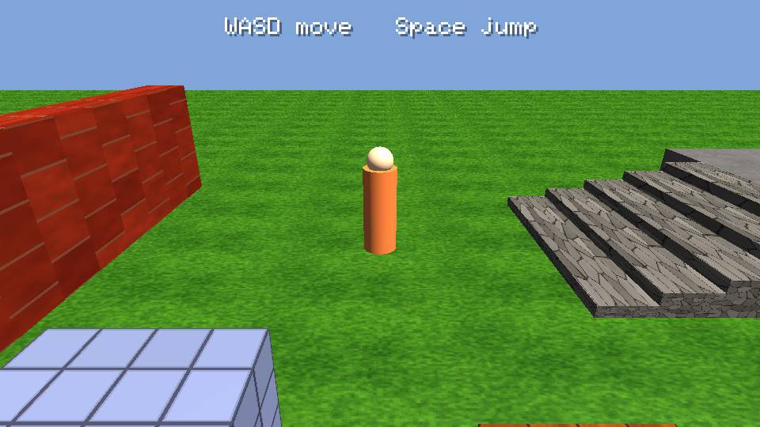
walker: Walker: a `CharacterBody` hero (WASD and Space) with stairs, a wall, a platform to jump onto or fall off; the engine moves, collides, steps and falls, a three-statement graph system turns keys into `walk` and `jump`. The camera rides on the hero (`tools/build_walker.py`). 960x540, reference renderer, picture hash 020cc747730b1413
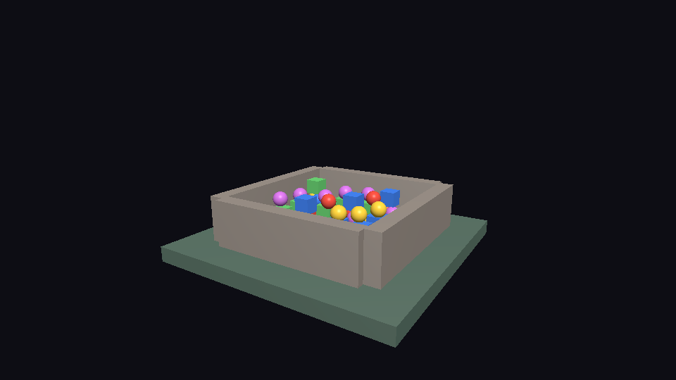
pile: Physics: spheres and boxes settling in a walled box (sequential impulses, identical on every run). 960x540, reference renderer, picture hash f53cf6b4dfe1c67b
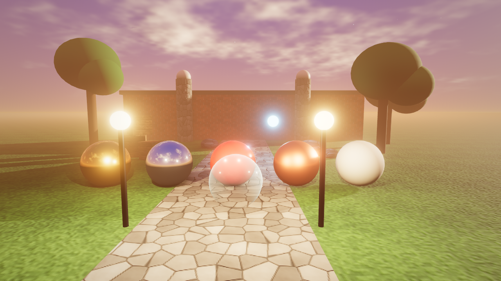
vista-high: Vista: a procedural evening sky with clouds, sun shadows, ambient occlusion, bloom on the lanterns, fog, cobbles, bricks and grass from built-in material textures, metal and plastic spheres (`tools/build_vista.py`). 1280x720, gpu: NVIDIA GeForce RTX 4060 (Vulkan, DiscreteGpu) (high)
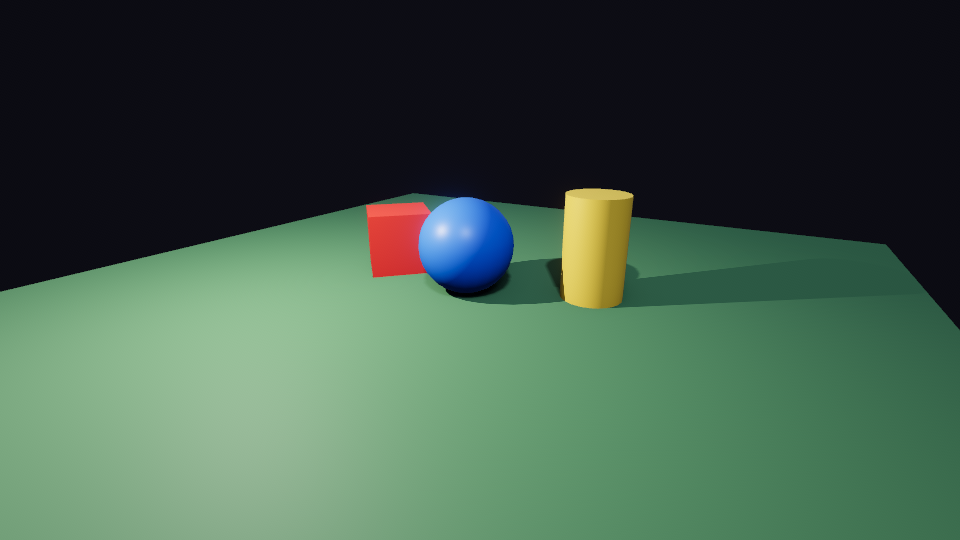
showcase-high: The showcase scene through the high-quality mode. 960x540, gpu: NVIDIA GeForce RTX 4060 (Vulkan, DiscreteGpu) (high)
orb_dash-high: Orb Dash with shadows and soft light. 960x540, gpu: NVIDIA GeForce RTX 4060 (Vulkan, DiscreteGpu) (high)
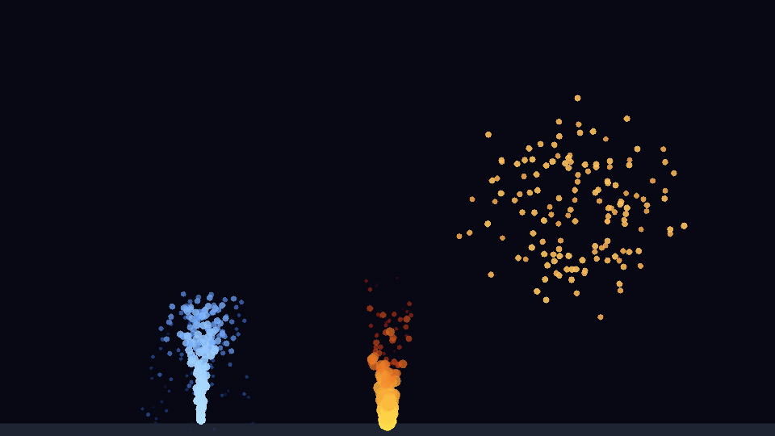
particles-high: Particles: the glow is bloom. 960x540, gpu: NVIDIA GeForce RTX 4060 (Vulkan, DiscreteGpu) (high)
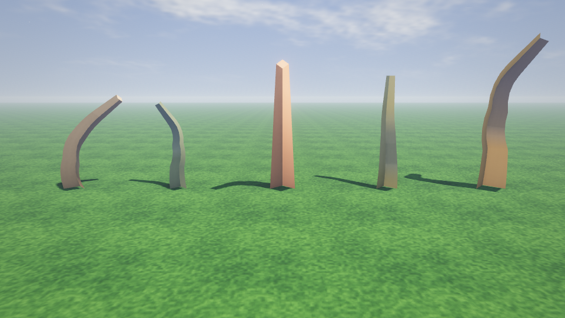
animation-high: The animated models with sun shadows, grass and a sky. 960x540, gpu: NVIDIA GeForce RTX 4060 (Vulkan, DiscreteGpu) (high)
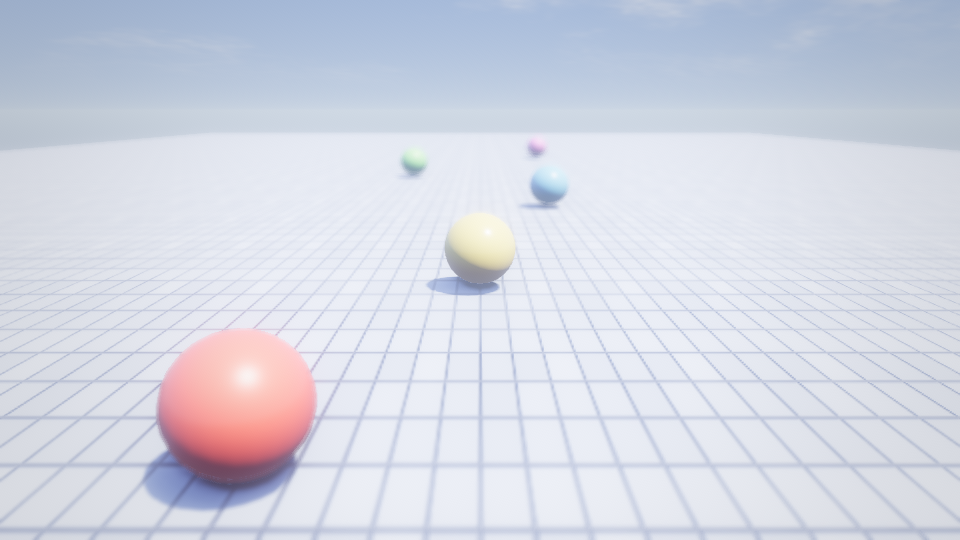
depth_of_field-high: Depth of field: the middle sphere is in focus, the near and far ones and the floor blur with distance (`Environment.dof`, `focus`, `focus_range`). 960x540, gpu: NVIDIA GeForce RTX 4060 (Vulkan, DiscreteGpu) (high)
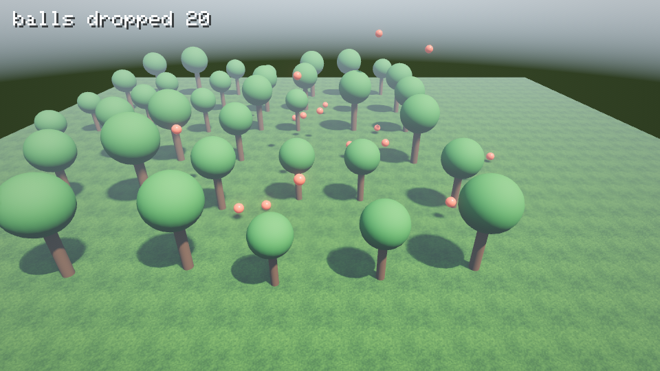
orchard-high: Prefabs: forty trees placed as instances of one prefab, balls raining from a `spawn_prefab` statement (`tools/build_orchard.py`). 960x540, gpu: NVIDIA GeForce RTX 4060 (Vulkan, DiscreteGpu) (high)
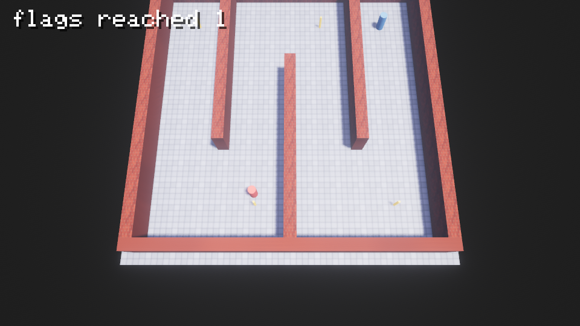
maze-high: Navigation: a Seeker patrolling four flags through a maze by itself (`NavAgent`, `tools/build_maze.py`). 960x540, gpu: NVIDIA GeForce RTX 4060 (Vulkan, DiscreteGpu) (high)
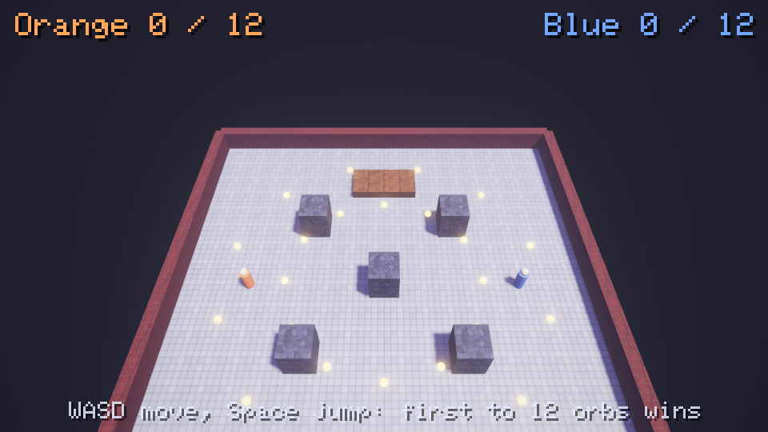
duel-high: The two-player lockstep game: two heroes, 24 orbs (`lunaris host`, `lunaris play --join`; `tools/build_duel.py`). 960x540, gpu: NVIDIA GeForce RTX 4060 (Vulkan, DiscreteGpu) (high)
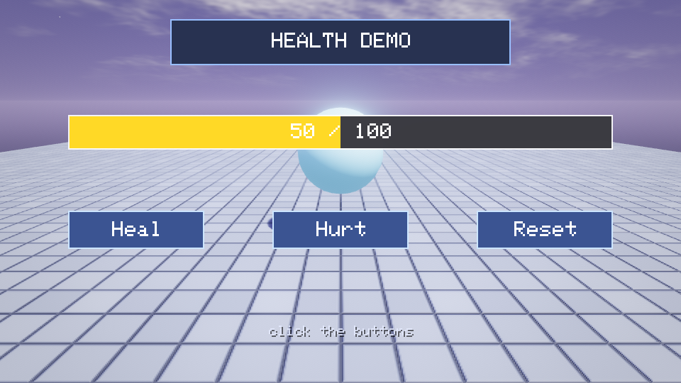
menu-high: The `Ui` component: a health bar, buttons that react to the mouse, a title panel (`tools/build_menu.py`). 960x540, gpu: NVIDIA GeForce RTX 4060 (Vulkan, DiscreteGpu) (high)
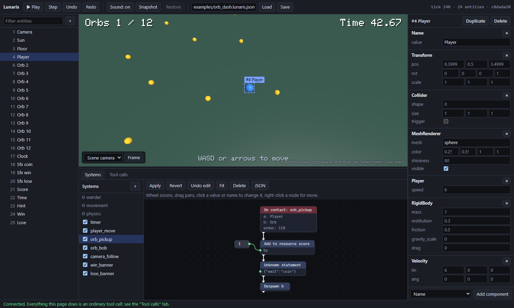
The browser editor playing Orb Dash: entity list, viewport, inspector, Systems and Tool calls tabs.
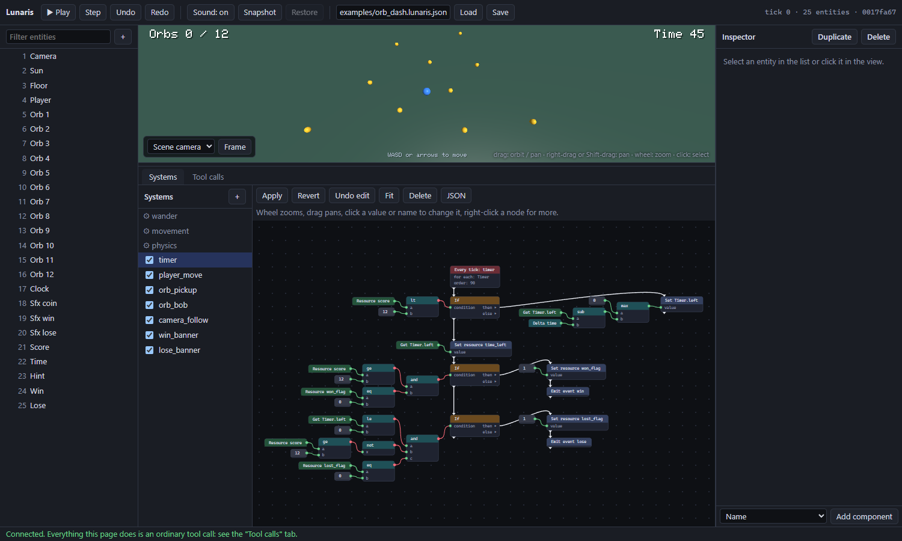
A graph system drawn as nodes (right-click to edit; Apply sends it to the engine).
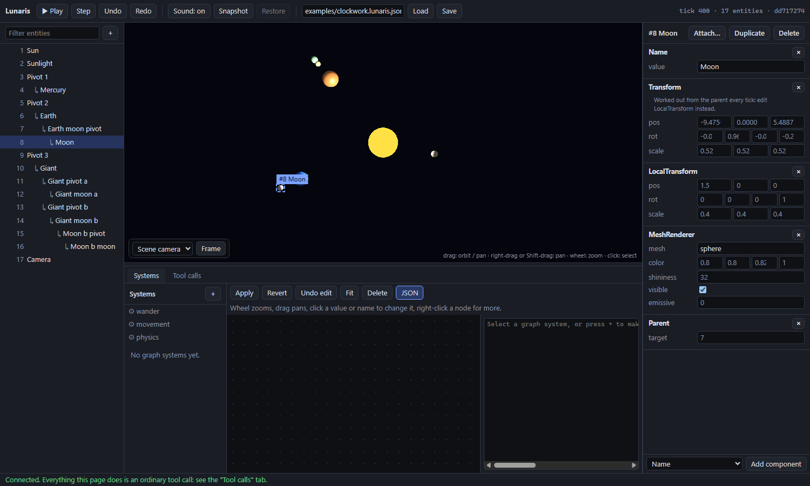
Attached entities nested under their parent in the list (Parent + LocalTransform, set with Attach...); the inspector shows the selected moon's local placement. Made by tools/editor_shots.mjs.
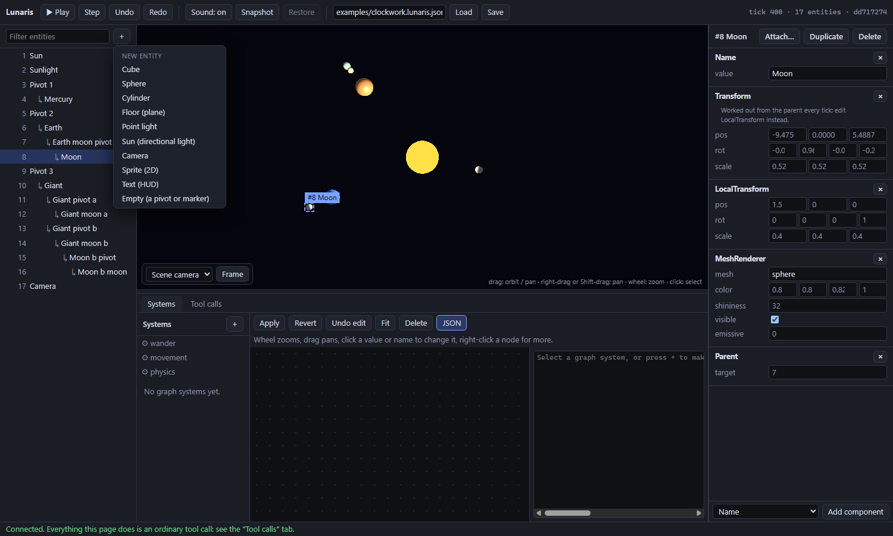
The + menu: ten kinds of entity, each one an ordinary spawn call.
What a language model sees
The minimap tool: a text map around the player in Orb Dash (@ is the player, O an orb, up is -z).
.........................
.........................
.................O.......
.........................
........O................
.........................
.........................
.........................
............O.....O......
.........................
.........................
......O..................
............@.O..........
.........................
..........O..............
.....................O...
..O............O.........
.........................
.........................
..........O..............
............C............
.........................
.........................
.........................
................O........
legend: C = Camera x1, S = Sun x1, @ = Player x1, O = Orb x12